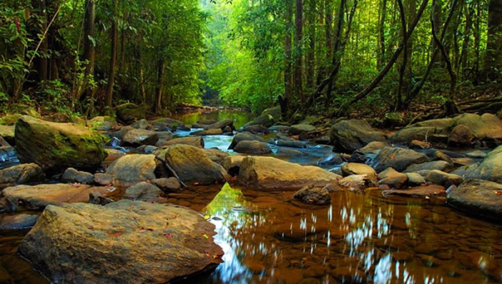
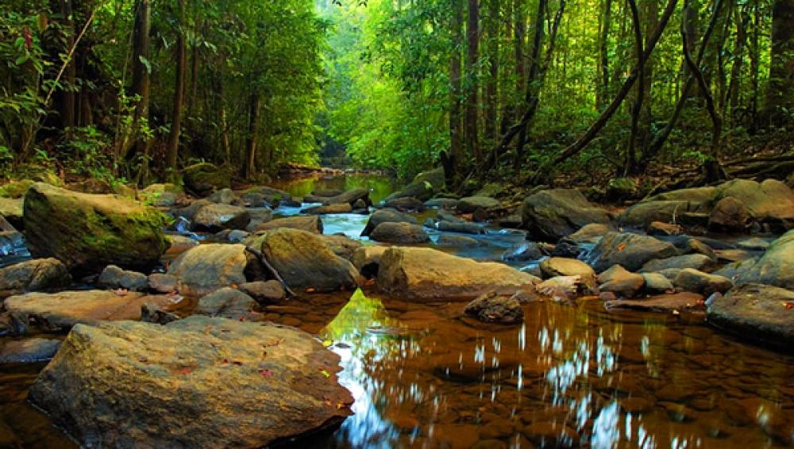
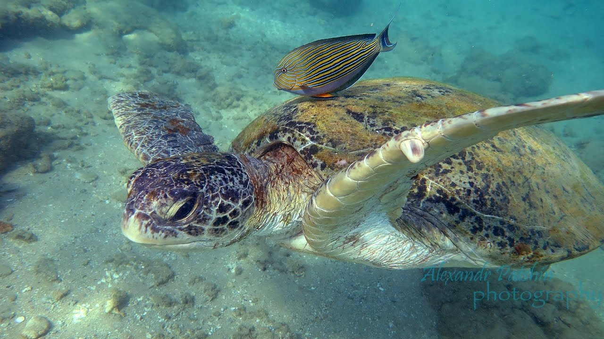
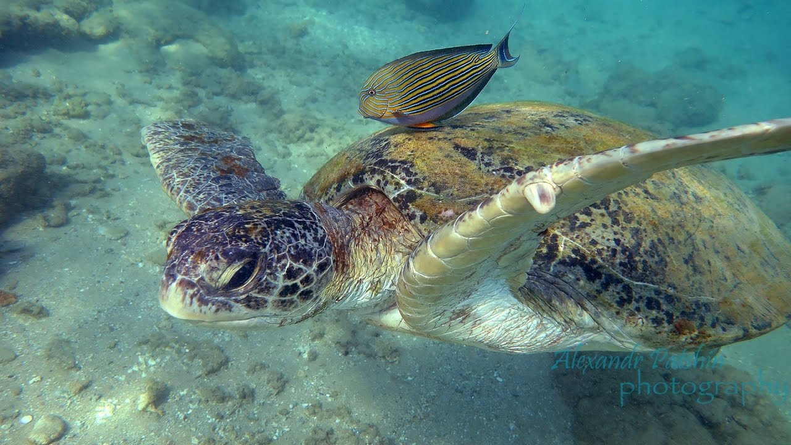

Sri Lankan Wildlife
Explore the Beautiful animals that roam free on the Island


Yala National Park
The Yala nation Park a Nature reserve covering 130,000 hectares of land divided into 5 blocks having two bloacks open to the public. It was designated as a wildlife sanctuary in 1900 and was open as a National park in 1938.
It is now home to 44 varieties of mammal, 215 bird species and contains the world's largest concentration of Leopards within the reserved lands
Maps Location Link
 

Sinharaja Forest Reserve
The Sinharaja Forest Reserve covering roughly 8,800 ha of land is the country's last viable area of primal tropical rainforest and A UNESCO listed World Heritage Site. A higher percentage of trees within the area are endemic and many very rare, it also is home to over 50% of the country's endemic species of mammals,butterflies,insects,reptiles and rare amphibians. The area being home to many endemic creatures is also home to a number to threatened, endangered and rare species icluding; leopard, Endemic purple faced Langur and the Green-billed coucal.
Since Endemism is very high in the area protecting and reserving the land has been a great priority. The preserved land is also a important component in studing continental drift and biological evolution.
 

Hikkaduwa Marine National Park
The Hikkaduwa Marine National Park being one of the three marine national parks of Sri Lanka, extends to a depth of about 5 meters. While not being a popular fact the the park having reserved the coral reef acts as a major protector of the Hikkaduwa beach, also the main city being saved during the 2004 Boxing day Tsunami was also using the help of the coral reef in the park.
Having such an important role the Park is also home to many marine life which is open for people to explore through snorkling and diving. Exotic creatures such as the Olive Ridley turtle, Angel fish, Butterfly fish and if lucky the rare Blacktip Reef shark might also get spotted.